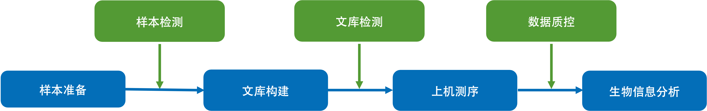

DM-seq standard analysis report-EN demo
| Contract ID | XXXXSCXXXXXXXX |
| Contract Name | DM-seq analysis |
| XXXXSCXXXXXXXX-ZXX-JXXX | XXXXSCXXXXXXXX-ZXX-JXXX |
| Reference Genome and Version | ncbi_siniperca_chuatsi_gcf_020085105_1_asm2008510v1 |
| Report Time | 2026-03-27 | Warm Tips | Partial results are presented in this report, while full results will be delivered in data release； Hyperlink of results in this report will be only valid in data release, after statement confirmation。 |
1 Introduction
DNA methylation is a process by which methyl groups are added to DNA C5 position mediated by DNA methyltransferase (DNMT) (Goldberg et al., 2007). It results in the conversion of the cytosine to 5-methylcytosine (5mC). As an important kind of epigenetic modifications, DNA methylation is widely studied, and it works with histone modifications to play significant roles in regulation of gene expression, chromatin conformation and so on. In vertebrates, DNA methylation typically occurs at CpG dinucleotides. However, there is a large proportion of non-CG methylation (CHH, CHG, H represents A, C, T) in plants。
In general, high DNA methylation could repress gene expression, and demethylation would recover gene expression. DNA methylation participates in many cell activities, including cell differentiation, tissue-specific expression, genomic imprinting, X-chromosome inactivation. Abnormal DNA methylation can cause developmental abnormalities, tumors and other diseases. Thus DNA methylation plays a significant role in understanding gene expression, individual development and the mechanisms of diseases occurance and development。
Directed DNA methylation sequencing (DM-seq) uses specific enzymes to directly convert 5mC within the genome to T, while unmethylated C remains unaffected, preserving the base complexity of the library. It enables the analysis of SNV, SV, Indel, and CNV simultaneously with the analysis of methylation sites, achieving two sets of omics data from a single sample. It significantly reduces the costs of library preparation, sequencing, and analysis, making it a powerful tool for studying the interaction between DNA methylation and genetic variation information。
Workflow is shown as follows:

Figure 1 Project workflow
2 Library Construction and Sequencing
2.1 Sample Quality Control
Please refer to the sample test report。
2.2 Library Construction, Quality Control and Sequencing
After the sample passes the QC, a certain proportion of control DNA (lambda DNA and pUC19) was added. First, Covaris S220 was used to randomly fragment genomic DNA to 200-400bp, and the fragmented DNA fragments were then subjected to enzymatic treatment. After treatment, methylated C was converted to U, while unmethylated C remains unchanged. Subsequently, sequencing adapters were added and double-stranded DNA was synthesized. After fragment screening, PCR amplification was performed to obtain the final DNA library. The workflow for library construction is as follows：

Figure 2 Library construction workflow
The library QC mainly includes two methods：
(1) AATI detected the integrity of DNA fragments in the library and the size of inserted fragments。
(2) QPCR detected the effective concentration of the library。
After passing the library QC, sequencing was performed based on the effective concentration of the library and the data output requirements。
See methods for detailed methods。 English version methods、Chinese version methods
3 Bioinformatics Analysis Pipeline
The bioinformatic analysis workflow of raw sequencing data is shown as follows：

Figure 3 Bioinformatics workflow
See methods for detailed methodsEnglish version methods、Chinese version methods
4 Analysis Results
4.1 Data Quality Control
The original images obtained from high-throughput sequencing platform (eg.illumina) are transformed into sequenced Reads by CASAVA base calling, we call these Reads as Raw Data or Raw Reads which are saved in FASTQ format. It contains Reads information and the corresponding sequencing quality information. These files contain Reads information and the corresponding sequencing quality information. Each Read has four lines described in detail as follows：
@HWI-ST1276:71:C1162ACXX:1:1101:1208:2458 1:N:0:CGATGT
NAAGAACACGTTCGGTCACCTCAGCACACTTGTGAATGTCATGGGATCCAT
+
#55???BBBBB?BA@DEEFFCFFHHFFCFFHHHHHHHFAE0ECFFD/AEHH
Introduction to the structure of Illumina sequencing identifier (Illumina_Identifier) Reads: Line 1 begins with a '@' character and is followed by the Illumina Sequence Identifiers and an optional description。Line 2 is the raw sequence Read. Line 3 begins with a '+' character and is optionally followed by the same sequence identifiers and descriptions as in Line 1. Line 4 encodes the quality values for the sequence in Line 2 and must contain the same number of characters as the bases in the sequence.
Example introduction to the detailed information of Illumina sequencing identifier (Illumina_Identifier):
(1) HWI-ST1276:71: The 71st run of the sequencing device with identifier HWI-ST127；
(2) C1162ACXX:1:1101:1208:2458 indicates that the coordinate information of this Read on tile 1101 in lane 1 of C1162ACXX (Flowcell ID) is (x=1208, y=2458)；
(3) 1:N:0:CGATGT The first digit is 1 or 2, where 1 indicates that the sequence is the first in single Reads or paired ends, and 2 indicates the second in paired ends; the second letter indicates whether the Reads have been corrected and filtered (Y indicates filtered out, N indicates retained); the third digit indicates the number of Control Bits in the sequence; the fourth six-base is the Illumina index sequence information。
Sequencing process itself has the possibility of machine errors. Sequencing error rate distribution can reflect the quality of sequencing data. The quality value of each base in sequence information is stored in the FASTQ file. Quality value of the Read represented by Qphred and the “e” represents the sequence error rate, Qphred=-10log(10)((e)). The relationship between sequencing error rate (e) and sequencing base quality value (Qphred) is as following：
| Phred Score | The corresponding quality value (ASCII code) in FASTQ | Error Rate | Correct Rate | Q-sorce |
|---|---|---|---|---|
| 10 | + (10+33) | 1/10 | 90% | Q10 |
| 20 | 5 (20+33) | 1/100 | 99% | Q20 |
| 30 | ? (30+33) | 1/1000 | 99.9% | Q30 |
| 40 | I (40+33) | 1/10000 | 99.99% | Q40 |
(1) Due to the gradual consumption of reagents during sequencing, the sequencing error rate increases with the length of Reads, which is a common feature of the Illumina high-throughput sequencing platform.
(2) For the normal methylation library, the sequencing of Read1 and Read2 will exhibit a directional characteristic: T content is higher in Read 1, and A content is higher in Read 2.
4.1.1 FastQC（Raw_reads）
The massive raw data high-throughput sequencing technology must be qualified to guarantee the downstream bioinformatics analysis. FastQC is used to generate a QC report to evaluate the raw data quality. Novogene uses FastQC to get a basic statistics of the raw Reads, shown in the follows：
Figure 4.1 FastQC of raw reads
4.1.2 Trimming of raw data
To obtain the qualified clean data, we trim the raw Reads to filter out the contaminated adapter sequence and low-quality Reads. Fastp is used for data trimming and the selection of trimming steps and their associated parameters are shown in the follows (Bolger et al., 2014):
（1）Cut Reads with adaptor contamination;
（2）Cut bases off the start and end of a Read, if below a threshold quality of 3 or containing N;
（3）It perform a 4-base sliding window trimming, cutting once the average quality within the window falls below a threshold of 15;
（4）The minimum Read length to be kept is specified as 36 nt;
（5）The unpaired Reads after trimming is discarded;
Table 4.1 Raw data QC summary
| LibraryID | Sample name | Raw_reads | Raw_bases(G) | clean_reads | clean_bases(G) | Clean_ratio(%) | Q20(%) | Q30(%) | GC(%) | conversion rate(%) |
|---|---|---|---|---|---|---|---|---|---|---|
| T2_3MM_13C | T2_3MM_13C | 372660539 | 111.8 | 365569580 | 100.98 | 90.32 | 99.60 | 97.29 | 42.02 | 96.02 |
| TAPS_2_10_R2 | TAPS_2_10_R2 | 394344700 | 118.3 | 386119131 | 106.92 | 90.38 | 99.61 | 97.69 | 41.76 | 97.23 |
-
(1) LibraryID: name of library
(2) Sample name: sample name
(3) Raw Reads: the Read counts of raw data
(4) Raw Bases(G): Read counts of raw data multiplied by Read length, saved in G unit
(5) Clean Reads: the sequencing Read counts after trimming filtering
(6) Clean bases(G): clean Read counts multiplied by Read length, saved in G unit
(7) Clean ratio(%): the proportion of clean bases in raw bases
(8) Clean_Q20(%): the proportion of bases with quality score more than 20
(9) Clean_Q30(%): the proportion of bases with quality score more than 20
(10) GC Content(%): the proportion of G and C in all the bases
(11) Conversion rate(%): the conversion rate for methylated-C converting to T
Note: Q represents the base sequencing quality value. The quality value of each base is equal to the negative ten times the base-10 logarithm of the error probability P: Q = -10 × log10(error P). For example, when the error rate P = 1%, the corresponding Q value is Q = -10 × log10(0.01) = 20. Therefore, Q20 corresponds to an error rate of 1%, and Q30 corresponds to an error rate of 0.1%.
4.1.3 FastQC（Clean_reads）
FastQC is also performed on the clean data obtained from trimming, the results as shown：
Figure 4.2 FastQC of clean reads
-
(1) Top-left: horizontal axis represents position in Read (bp), vertical axis represents quality scores. Different colors represent different quality range;
(2) Top-middle: horizontal axis represents position in Read (bp), vertical axis represents base percentage;
(3) Top-right: the distribution of Read length;
(4) Bottom-left: GC distribution over all sequences. Red line is the actual GC content distribution, blue line is the theoretical distribution;
(5) Bottom-middle: N-ratio across all bases;
(6) Bottom-right: x-axis is the sequence duplication level. y-axis is the percent of the deduplicated Reads.
Results: QualityControl
| Q1：Why is the sequencing quality of Read2 worse than that of Read1？ |
| A1：Limited by the sequencing instrument itself, when the instrument reads Read2, due to the reduction of reagents, the sequencing quality of Read2 is more deviant than that of Read1. However, the sequencing quality Q20 of the overall sample should meet over 90%, and Q30 should meet over 85%. During the analysis process, we use the trim software to truncate the low-quality parts at the ends, which can improve the utilization rate of sequencing data。 |
| Q2：How to calculate the sample conversion rate？ |
| A2：During the library construction, after the sample undergoes enzymatic conversion, theoretically all methylated C sites are converted to T (originally U, which becomes T during PCR), but sometimes conversion may not occur at certain sites. Moreover, the methylation status of C in the sample DNA is unknown, so the true conversion rate of the sample genome cannot be directly obtained. Since all cytosine C in the internal reference sequence is methylated and its methylation status is known, during library construction, we add internal reference DNA as a control, process, construct libraries, and sequence the sample DNA and internal reference DNA together, and analyze the conversion rate of the internal reference DNA as the final conversion rate of the sample。 |
4.2 Alignment to reference genome
BWA (v 0.7.12) was used to perform alignments of clean reads to a reference genome (Vasimuddin et al., 2019). Then, these Reads were filtered to obtain high-quality Reads (MAPQ ≥ 13), and uniquely mapped Reads with PCR duplicates removed were used for further analysis。
4.2.1 Mapping results
The summary of the mapping result is as follows：
Table 4.2 Overview of mapping results
| Samples | Total reads | Mapped reads | Mapping rate(%) | Unique Mapping rate(%) | Duplication rate(%) |
|---|---|---|---|---|---|
| TAPS_2_10_R2 | 772238262 | 752536435 | 97.45 | 87.41 | 33.96 |
| T2_3MM_13C | 731139160 | 720829238 | 98.59 | 88.80 | 30.05 |
-
（1）Samples: Sample name
（2）Total Reads: The filtered Clean Reads used for mapping
（3）Mapped Reads: Reads mapped to the reference genome
（4）Mapping rate (%): The percentage of Mapped Reads in the filtered Clean Reads used for mapping
（5）Unique Mapping rate (%): The percentage of uniquely mapped Reads in the filtered Clean Reads used for mapping
（6）Duplication rate (%): The percentage of duplication Reads in the filtered Clean Reads used for mapping
4.2.2 Read Coverage and Sequencing Depth
4.2.2.1 Distribution of genome coverage
Single-base read coverage (the total read amount which covers this specified base) of the genome is calculated to get the genome coverage distribution and cumulative genome coverage distribution of read coverage.
Table 4.3 genome coverage summary
| Samples | sites_num | sites_covgMean | sites_numCovg1 | sites_numCovg5 | sites_numCovg10 |
|---|---|---|---|---|---|
| T2_3MM_13C | 2498023915 | 22.74 | 91.56 | 89.58 | 85.49 |
| TAPS_2_10_R2 | 2537127477 | 22.20 | 93.00 | 90.83 | 86.76 |
-
(1) Samples: sample name
(2) sites_num: the total detected genome base amount
(3) sites_covgMean: the average base coverage of the genome
(4) sites_numCovg1: the percentage of bases with a minimum 1x coverage of the genome
(5) sites_numCovg5: the percentage of bases with a minimum 5x coverage of the genome
(6) sites_numCovg10: the percentage of bases with a minimum 10x coverage of the genome
Figure 4.3 Distribution of genome coverage of all samples
Top: x-axis shows the coverage depth, y-axis shows the fraction of bases with the corresponding coverge depth in the genome；Bottom: x-axis shows the coverage depth, y-axis shows the accumulative fraction of bases above corresponding depth in the genome. Different colors denote different samples.
4.2.2.2 Distribution of chromosome depth and coverage
The read amount mapped on each chromosome is calculated to get the mean sequencing depth and coverage depth of each chromosome：
Figure 4.4 The distribution of Reads on each chromosome
The x-axis denotes the chromosome; the left y-axis denotes the average squencing depth of each chromosome, the right y-axis denotes the Read coverage percentage of each chromosome。
4.2.3 Coverage depth of cytosine sites
The coverage level at site C is also an important indicator for measuring sequencing depth in methylation experiments。
The coverage of C sites under CpG (i.e., the number of reads supporting that context), and the statistical results and cumulative distribution plot are as follows：
Reasons for distinguishing sequence context statistics: The methylated C bases in the genome includes three forms: CG, CHG, and CHH, where H represents A, T, or C bases. The differences among these three types of methylation lie in their establishment (such as symmetric and asymmetric methylation sites), maintenance (such as methyltransferases), and inheritance principles, and their roles in the genomic regulation process also differ. Generally, literature reports separately analyze DNA methylation information under the three sequence contexts。
Table 4.4 The coverage statistics of cytosine in different contex
| Samples | C_covgMean | C(Mb) | CG(Mb) | meanC(%) | MeanCG(%) |
|---|---|---|---|---|---|
| T2_3MM_13C | 8.3 | 326.9 | 326.9 | 60.85 | 60.85 |
| TAPS_2_10_R2 | 9.2 | 381.3 | 381.3 | 64.00 | 64.00 |
-
(1) sample: sample name
(2) C_covgMean: The mean coverage of all the cytosine sites
(3) C(Mb): The base number mapped onto the genome cytosine sites
(4) CG(Mb): The base number mapped onto the genome CG-context cytosine sites
(5) MeanC: The average methylation level of all the genome cytosine sites
(6) MeanCG: The average methylation level of all the genome CG-context cytosine sites
Figure 4.5 The accumulative coverage distribution of cytosines in each context
The x-axis shows the coverage depth of Cytosine sites, y-axis shows the accumulative fraction of cytosine sites above corresponding coverage depth. Different colors denote different contexts。
Results: Mapping
| Q1：How are Duplicated Reads defined? What is the normal range of duplication rate (%)？ |
| A1：Duplicated Reads mainly refer to the identical reads obtained through sequencing due to PCR duplication during library construction, which have the same alignment positions in the genome. Of course, factors such as high genomic repeat rate and sample degradation also have a certain possibility of causing duplicated reads (with a lower probability than PCR duplication). Generally speaking, the duplication rate increases with the increase of sequencing depth and with the decrease of the initial amount of library construction, mainly related to the library capacity.Under normal circumstances, this value should be within 20% to be considered normal, and it may increase slightly for single-cell libraries or low-input libraries. If the customer's research requires a higher sequencing depth (above 50X), it is recommended to perform sequencing on multiple libraries。 |
4.3 Identification of Methylated Cytosines
After the alignment, site calling, and evaluation of genomic coverage/depth and C site coverage/depth of methylation data, C-site analysis of methylation is processed as follows：
4.3.1 Detection of methylated sites
After alignment, rastair (Liu, Y et al., 2019) is used to identify methyalted sites.
The results of methylation level of cytosine are shown in follows：
Table 4.5 Methylation Level of Cytosines
| Chromosome | Position | Strand | Methylation Level | mC count | umC count | Pvalue | Corrected pvalue | Context |
|---|---|---|---|---|---|---|---|---|
| chr1 | 3050094 | + | 0.848 | 39 | 7 | 4.9977e-71 | 8.4113e-68 | CG |
| chr1 | 3050095 | - | 0.672 | 43 | 21 | 3.3447e-70 | 5.5516e-67 | CG |
| chr1 | 3050194 | + | 0.593 | 35 | 24 | 1.7111e-54 | 2.0140e-51 | CG |
| chr1 | 3050195 | - | 0.750 | 42 | 14 | 5.0595e-72 | 8.6818e-69 | CG |
| chr1 | 3050222 | + | 0.750 | 51 | 17 | 3.8017e-87 | 8.2581e-84 | CG |
| chr1 | 3050223 | - | 0.656 | 42 | 22 | 6.4743e-68 | 1.0295e-64 | CG |
-
(1) Chromosome: chromosome ID
(2) Position: cytosine coordinate at genome
(3) Strand: strand information of the cytosine
(4) Methylation level: ML=mC/(mC+umC)
(5) mC count: the number of methylated cytosines
(6) umC count: the number of unmethylated cytosines
(7) Pvalue: p value of binomial distribution test
(8) Corrected pvalue: adjusted p value
(9) Context: contexts in which the cytosine is located
4.3.1.1 Summary of Genomic Methylation Profile
In CpG sequence context, percentages of methylated cytosines in contexts are shown in the following table:
Table 4.6 Summary of Genomic Methylation Profile
| Samples | mC percent(%) | mCpG percent(%) |
|---|---|---|
| T2_3MM_13C | 70.59% | 70.59% |
| TAPS_2_10_R2 | 75.37% | 75.37% |
-
(1) Samples: sample name
(2) mC percent(%): percent of methylated cytosines in all of the genomic cytosines
(3) mCpG percent(%): percent of methylated cytosines in CG regions
4.3.1.2 Methylation analysis of C sites
For the identified methylated sites, the methylation level is calculate as: ML=mC/(mC+umC), where ML is the methylation level. The distribution of methylation level in each context is shown in follows：
Figure 4.6 The distribution of methylation level in CpG
The x-axis is methylation level, the y-axis is the percentage of methylated sites in all sites。（count methylation level as 0% if < 5%, count as 10% if > 5% and < 15%, and so on. Count as 100% if > 95%）
4.3.1.3 Visualization of mapping results
The bw format files containing mapping results, corresponding reference genome and gene annotation files are provided. IGV (Integrative Genomics Viewer) software is recommended for visualization of bw file (Robinson et al., 2011; Thorvaldsdóttir et al., 2013). The advantages of IGV include：
(1) display the positions of single or multiple reads in the reference genome, as well as reads distribution in annotated exons, introns or intergenic regions in adjustable scale;
(2) display reads abundance in different regions to surrogate the methylation level of different regions in adjustable scale;
(3) provide annotation information of both genes and splicing isoforms and other related annotation information;
(4) display annotation downloaded from remote server or imported from local machines or both。

Figure 4.7 IGV Visualization
After modifing in IGV, save the fiture as SVG format and then use AI to edit it into the following form：

Figure 4.8 The IGV visualization can be saved as SVG format and edited using Adobe Illustator
Results： MethylationStat
| Q1：How is the methylation level calculated？ |
| A1：There are multiple ways to define and calculate methylation levels. We adopt the Weighted methylation level from the article Schultz et al., 2012, with the calculation method as follows: the number of reads supporting methylated C at a certain site (region) divided by the total number of reads covering that site (region) is the methylation level of that site (region), and the calculation formula is ML = mC/(mC + umC). For example: the number of reads covered by site A is 10, the number of reads supporting mC is 2, the number of reads not supporting mC is 8, and the methylation level of this site is 2/(2+8)=0.2. |
| Q2：What is the process of mC calling, and why is it necessary to perform mC calling？ |
| A2：mC calling, which refers to the identification of methylation sites. Under normal circumstances, the conversion of methylated C sites does not occur 100%, and there will be some untransformed sites. Whether a site is a true mC site follows a binomial distribution. Therefore, we use the binomial distribution test B(n, p) to identify whether the site is a true methylation site.Assuming the number of methylated Cs at a certain locus is x, the Read coverage at this locus is n, and the non-conversion rate of methylation is p (non-conversion rate), then it is necessary to verify whether the occurrence of x methylated Cs is reliable under the conditions of probability p and sequencing depth n. Methylation site identification criteria: q-value < 0.01 and Read coverage >= 5. |
| Q3：Is the methylated C site the same concept as the C site？ |
| A3：Yes, mC refers to the methylated C site after binomial distribution testing, and the C site refers to the original C site obtained from sequencing。 |
| Q4：What information is displayed in the bw format file？ |
| A4：The BW format file is a methylation level file for loci, and IGV is used to view the methylation levels of corresponding loci; here we select loci with a coverage of 4X or greater to calculate and display the methylation level values。 |
| Q5：Do all methylation sites occur in CG/CHG/CHH contexts? Are there any other classifications？ |
| A5：Most methylation literature uses these three contexts as classification indicators for the locations where methylation occurs. Since H represents A/C/T, CG/CHG/CHH or CG/non-CG methylation can represent all methylation sites. Because the generation, maintenance, and mechanisms of action of methylation may differ among different sequence types, this is also the reason why our workflow uses three sequence contexts for separate analysis. For customers, they can choose the sequence context that is of greater interest or has been more extensively studied for data mining (such as the CG sequence context). For some algal organisms, various sequence environments may be distinguished based on the functional structural sequences of methylation-related enzymes. This type of analysis is not within the scope of the standard analysis commitment。 |
4.3.2 Single sample Methylation analysis
The methylation analysis for single sample includes: overall methylation density, methylation density on chromosome, methylation distribution on functional genetic region, methylation distribution on up/downstream 2kb and gene body. These analysis can be used to construct a species methylation profile. The results are as follows：
4.3.2.1 Single sample Methylation analysis
The whole genome is divided into sub-bins by 10kb. We analyze the C sites in each context for each sample (or each group, combine the samples if the biological replicates > 5). Results are shown in follows：
Figure 4.9 methylation level density in whole genome
The x-axis is the name of each sample/group, the y-axis is the methylation density. Take 10kb as a bin, the width of each violin represents the number of bins at this methylation density。
The whole genome is divided into sub-bins by 10kb. We analyze methylation density of the C sites in each context for each sample (or each group, combine the samples if the biological replicates > 5). Results are shown in follows：
Figure 4.10 methylation level density in whole genome
The x-axis is the name of each sample/group, the y-axis is the methylation density. Take 10kb as a bin, the width of each violin represents the number of bins at this methylation density
4.3.2.2 Circos plots for methylation density
Circos plot is used to represent the methylation density on chromosome (Zhong et al., 2013; Krzywinski et al., 2009)：
Figure 4.11 Circos plots for methylation density on chromosome
Circos plot represents (from outside to inside):1. The heatmap for methylation density in CG context 2. The heatmap for TE（repeat elements）rate 3. The heatmap for gene density
TE density calculation method: Calculate the proportion of TE (repeat element), which is the ratio of the total length occupied by repeats within the bin (if there are no repeats, this analysis is not performed); gene density calculation: Calculate the number of genes contained in each bin.
4.3.2.3 Circos plots for methylation level density
The max/min methylation density in each bin in each context.(when plotting, the max methylation density is calculated as 100%, others are calculated as the percentage of the max one：
Table 4.7 The max/min methylation density in each bin
| Samples | CG_level_max | CG_level_min | CG_density_max | CG_density_min |
|---|---|---|---|---|
| T2_3MM_13C | 77.67 | 12.89 | 98 | 66.13 |
| TAPS_2_10_R2 | 75.79 | 15.49 | 97.87 | 69.21 |
-
(1) Samples: sample name
(2) CG_level_max：max value of methylation level in each bin in CG context
(3) CG_level_min：min value of methylation level in each bin in CG context
(4) CG_density_max：max value of methylation density in each bin in CG context
(5) CG_density_min：min value of methylation density in each bin in CG context
The distribution of methylation levels on chromosomes is displayed using circos plots, as shown in Figure 4.12：
Figure 4.12 Circos plots for methylation level densit
Circos plot represents (from outside to inside): 1. Line chart for methylation level (red donates CG context, blue donates CHG context, purple donates CHH context) 2. The heatmap for gene density 3. Line chart for methylation density (red donates CG context, blue donates CHG context, purple donates CHH context)。
4.3.2.4 Methylation Level of Genomic Features
For each context, the C site in various genomic functional regions (such as promoter, exon, intron, repeat, CGI, CGI shore, CGI shelves, open sea, etc. Among them, the promoter region is the 2kb region upstream of the TSS site; usually, the CGI-related regions in mammals are predicted using cpgIslandExt, and repeats are predicted using RepeatMasker for this species or its closely related species. ) were statistically analyzed, and the distribution of the average methylation levels of genomic functional elements in each sample is as follows：
Figure 4.13 Methylation level distribution of all samples in CpG island
Figure 4.14 Methylation level distribution of all samples in genomic features
The x-axis represents different genomic elements, and the y-axis represents methylation level. The various functional areas of each gene are divided into 20 bins, and average methylation level within each bin region is calculated。
4.3.2.5 Methylation Level of up/downstream
The methylation level from upstream 2kb to downstream 2kb and the genebody(from TSS to TES) of each C context is summarized. The distribution of methylation level from TSS to TES is shown as follows ：
Figure 4.15 methylation level from upstream 2kb to downstream 2kb
The x-axis represents each bin of upstream 2kb, gene body, and downstream 2kb. The y-axis represents the methylation level. Each region of each gene is equally divided into 50 bins, and then the C-site levels of the corresponding bins in all regions are averaged.
Results: Sample Methylation Analysis
| Q1：How is methylation density calculated？ |
| A1：There are multiple types of definition and calculation methods for methylation density. Here, the calculation method of relative density is used: the number of methylated Cs within a certain region divided by the number of Cs covered by 5X or more reads in that region (the base number used for identifying methylation). |
| Q2：Can the single-sample methylation density circos plot display all chromosomes? |
| A2：Regarding chromosome selection for circos plotting, for assemblies at the autosome level, by default, only the circos plot showing autosomal methylation status will be displayed; for genomes at the scaffold level, only the 15-20 longest scaffolds will be selected for display. Displaying too many scaffolds affects the plotting effect and the expression of meaning. |
4.3.3 Correlation and cluster heatmap
In order to ensure the reproducibility of the results, it is often necessary to design biological duplication in the experiment. NIH Roadmap Epigenomics Project suggested that two or more biological replicates should be used in the design of the methylation experiment. There are two main uses for biological duplication: one is to prove that the biological experiments involved are repeatable and not very variable, and the other is to ensure that differential genetic analysis have more reliable results：
4.3.3.1 Correlation and PCA analysis
Correlation and principal component analysis (PCA) will be conducted to ensure the reproducibility of the analytical results. Correlation analysis was performed when the sample number is greater than 2, and PCA was performed when the sample number is greater than 6. (The PCA results will not be displayed when the number of samples is less than 6)
4.3.3.1.1 Correlation analysis
The correlation of methylation levels between samples is an important indicator to test the reliability of the experiment and whether the sample selection is reasonable. The closer the correlation coefficient is to 1, the higher the similarity in the methylation pattern between samples。
The whole genome is split by 2kb sub-bin. We provide the methylation level for each bin and pearson correlation analysis (Smallwood et al., 2014)：
Figure 4.16 Correlation analysis
Heatmap: heatmap represents the correlation between samples. R2:the square of pearson correlation, which is calculate by CG contexts
4.3.3.2 Heatmap analysis of functional regions
The heatmap analysis of the methylation level of functional regions between samples can reflect the degree of agreement of the methylation level distribution of each sample in the gene function region：
Data of this analysis comes from Methylation Level of Genomic Features for single sample

Figure 4.17 Heatmap analysis of gene functional region methylation levels in different sequence environments of different samples
Results: Sample Methylation Analysis
4.3.4 Methylation level in comparison group
For most studies, we focus on the differential methylation analysis between samples. The methylation analysis for comparison groups includes: overall methylation density, methylation density on chromosome, methylation distribution on functional genetic region, methylation distribution on up/downstream 2kb and gene body. (combined the information if there are biological replicates (Song et al., 2013).
4.3.4.1 Circos plot for differential methylation level
Circus plot can help reflect the differences of combined methylation level in comparison groups (Kulis et al., 2012; Krzywinski et al., 2009)。
Figure 4.18 Circos plot of combined methylation level in comparison groups
Circos plot represents (from outside to inside): 1. Methylation level for sample1 (group1), color donates the methylation level. 2. Methylation level difference between groups, heatmap shows the difference 3. methylation level for sample(group)2, colors donate the methylation level。
4.3.4.2 Methylation level of functional gene region
The methylated level in different cytosine contexts is calculated in different functional genomic regions such as promoter, exon, intron, repeat, CGI, CGI shore, CGI shelves、open sea(Promoter region is the 2kb region above TTS, 5’UTR, Exon and Intron are obtained from the Ensembl structure annotation files), the average methylation level distribution of comparison groups in genomic functional regions are shown in follows：
4.3.4.2.1 Methylation level distribution at functional genetic elements in CG context:
Figure 4.19 methylation level distribution at CpG island in CG context
Figure 4.20 methylation level distribution at functional genetic elements in CG context
The x-axis is the functional genetic elements, the y-axis is the methylation level. After combining the samples with biological repeats (if have), each functional region is divided into 20 bins and methylation level is calculated in each bin. Color donates group
4.3.4.3 Methylation level of up/downstream 2kb and gene body
We analyze the methylation level from upstream 2kb to downstream 2kb and the gene body (from TSS to TES) in C context and each C context for each compare group：
4.3.4.3.1 Methylation level distribution at up/downstream 2kb and gene body in CG context:
Figure 4.21 An overview of methylation level distribution at up/downstream 2kb and gene body in CG context
The x-axis is the functional genetic elements, the y-axis is the methylation level. After combining the samples with biological repeats (if have), each region is divided into 50 bins and methylation level is calculate in each bin. Color donates group。
Results: Compare Methylation Analysis
| Q：How are CGI and CGI-related areas defined？ |
| A：The criteria for screening CpG islands using the cpgIslandExt software on UCSC are to select regions with a size greater than 200 bp, a GC content greater than 50%, and an expected value ratio >0.6; CGI shore refers to the 2K regions upstream and downstream of CGI, CGI shelves are the 2K regions upstream and downstream of CGI shore, and open sea refers to regions outside of CGI, CGI shore, and CGI shelves. Generally speaking, CGI is mostly located upstream of housekeeping genes and has a relatively low methylation level |
4.3.5 Differentially methylated regions analysis
The methylation status may vary among the genomes of various samples (tissue, cells, individuals, etc.). The differentially methylated regions involved could be participated in the transcriptional regulation of genes. Identification of differential methylation can be used to examine differences in epigenetics in different tissues. It is well known that DNA methylation is involved in cell differentiation and proliferation, and many DMRs have been found in embryo reprogramming (R-DMRs) and developmental stages (D-DMRs) (Reik et al., 2001; Meissner et al., 2008; Doi et al., 2009). Cancer also exhibits overall methylation loss and hypermethylation of localized areas such as CpG islands in the promoter region of the tumor suppressor gene compared to normal samples (Irizarry et al., 2009)。
4.3.5.1 DMR analysis
DSS-single(DSS) is used to analyze differentially methylated regions (DMR) in the pipeline. Considering the spatial correlation of DMR, smoothing is applied when conducting the analysis. (Feng et al., 2014; Wu et al., 2015; Park et al., 2016)。
The factors considered in DSS analysis：
（1）The spatial correlation of the methylation site: appropriate use of information on nearby methylation sites can improve the assessment of methylation levels at each site and the identification of DMR; Use a smooth method to identify relatively long DMRs;
（2）The read depth of the sites: the sequencing depth of the site can improve the accuracy and the statistical values of DMR identification；
（3）The variance among biological replicates: Ignoring differences in biological duplication may lead to false positives. DSS software is based on beta binomial distribution, taking into account heterogeneity between biological replicates. When studying samples without replicated, DSS uses smoothing to nearby sites as biological repeat sites for analysis (DSS analysis pipeline and parameters can refer to README.txt in results and references。
Steps for DSS analysis of DMRs and software parameters: (Please refer to the references and the readme section of the result files for details)
DMR analysis results using DSS is shown in follows：
Table 4.8 DMR analysis results
| chr | start | end | DMR_length | C_number | group1_meanMethy | group2_meanMethy | diff.Methy | areaStat | C_context |
|---|---|---|---|---|---|---|---|---|---|
| chr1 | 4687782 | 4688031 | 250 | 18 | 0.134603293271357 | 0.644004015290185 | -0.509400722018828 | -128.593071264291 | CG |
| chr1 | 4928053 | 4928144 | 92 | 24 | 0.0263838083135128 | 0.119234744847306 | -0.0928509365337929 | -115.496684807944 | CG |
| chr1 | 4994109 | 4994276 | 168 | 22 | 0.811265435284077 | 0.399648736592681 | 0.411616698691396 | 166.244626421081 | CG |
| chr1 | 5178780 | 5179145 | 366 | 28 | 0.88949263616212 | 0.371545775200881 | 0.517946860961239 | 263.888124765837 | CG |
（1）chr: chromosome ID
（2）start: start position of DMR
（3）end: end position of DMR
（4）DMR_length: length of DMR
（5）C_number: number of sites inside DMR
（6）group1_meanMethy: average methylation level in case group
（7）group2_meanMethy: average methylation level in control group
（8）diff.Methy: difference of methylation level between two groups
（9）areaStat: statistical value to perform the feneral difference between two group
（10) C_context: sequence context
PS: DMR.all.result.xls: all DMR identified by DSS software. If the number of DMR in all context is higher than 10000, the top 10000 DMR are selected for further analysis。
4.3.5.2 DMR results annotation
Annotation to DMR regions such as promoter, exon, intron, CGI, CGI shore, repeat, TSS, TES, and information of gene name if DMR is in the gene region：
Table 4.9 DMR annotation
| chr | start | end | DMR_length | C_number | group1_meanMethy | group2_meanMethy | diff.Methy | areaStat | C_context | regionID | region | Gene name | Gene description |
|---|---|---|---|---|---|---|---|---|---|---|---|---|---|
| chr1 | 4928053 | 4928144 | 92 | 24 | 0.0263838083135128 | 0.119234744847306 | -0.0928509365337929 | -115.496684807944 | CG | ENSMUSG00000033813_16 | promoter | Tcea1 | - && sp|P10711|TCEA1_MOUSE Transcription elongation factor A protein 1 OS=Mus musculus OX=10090 GN=Tcea1 PE=1 SV=2 && - |
| chr1 | 4928053 | 4928144 | 92 | 24 | 0.0263838083135128 | 0.119234744847306 | -0.0928509365337929 | -115.496684807944 | CG | ENSMUSG00000033813_16 | utr5 | Tcea1 | - && sp|P10711|TCEA1_MOUSE Transcription elongation factor A protein 1 OS=Mus musculus OX=10090 GN=Tcea1 PE=1 SV=2 && - |
| chr1 | 4928053 | 4928144 | 92 | 24 | 0.0263838083135128 | 0.119234744847306 | -0.0928509365337929 | -115.496684807944 | CG | ENSMUSG00000033813_16 | exon | Tcea1 | - && sp|P10711|TCEA1_MOUSE Transcription elongation factor A protein 1 OS=Mus musculus OX=10090 GN=Tcea1 PE=1 SV=2 && - |
| chr1 | 4928053 | 4928144 | 92 | 24 | 0.0263838083135128 | 0.119234744847306 | -0.0928509365337929 | -115.496684807944 | CG | ENSMUSG00000104217_2 | intron | Gm37988 | - && sp|P97823|LYPA1_MOUSE Acyl-protein thioesterase 1 OS=Mus musculus OX=10090 GN=Lypla1 PE=1 SV=1 && PF02230:Phospholipase/Carboxylesterase|PF08711:TFIIS helical bundle-like domain |
| chr1 | 4994109 | 4994276 | 168 | 22 | 0.811265435284077 | 0.399648736592681 | 0.411616698691396 | 166.244626421081 | CG | ENSMUSG00000002459_18 | exon | Rgs20 | - && sp|Q9QZB1|RGS20_MOUSE Regulator of G-protein signaling 20 OS=Mus musculus OX=10090 GN=Rgs20 PE=1 SV=1 && PF00615:Regulator of G protein signaling domain |
（1）chr: chromosome ID
（2）start: start position of DMR
（3）end: end position of DMR
（4）DMR_length: length of DMR
（5）C_number: number of sites inside DMR
（6）group1_meanMethy: average methylation level in case group
（7）group2_neanMethy: average methylation level in control group
（8）diff.Methy: difference of methylation level between two groups
（9）areaStat: statistical value to perform the feneral difference between two groups
（10) C_context: sequence context
（11) regionID: region ID（could be gene ID，repeat ID，CGI position）
（12) region: region context
（13) Gene name: gene name or related description if gene ID related region
（14) Gene description: gene description
4.3.5.3 DMR length distribution
The following plot shows DMR length distribution. Previous study indicates that DMR lengths range from hundreds to thousands bp, which follows a normal distribution model (Sun et al., 2014; Wen et al., 2016)：
Figure 4.22 DMR length distribution in CG contexts
The x-axis represents DMR Length, and y-axis represents DMR counts with corresponding length。
4.3.5.4 Violin plot for DMR methylation level
For DMR methylation levels, the DSS software gives the average methylation level of the differentially methylated region to draw the methylation level distribution violin boxplot：
Violin plot for DMR methylation level in CG contexts ：
Figure 4.23 Violin plot for DMR methylation level in CG contexts
The x-axis is the comparison group name, the y-axis is the methylation level。
4.3.5.5 Cluster heatmap for DMR methylation level
For DMR methylation levels, the DSS software gives the average methylation level of the differentially methylated region to draw the heatmap to show the methylation and differences between the combinations。
DMR methylation level cluster heatmap in CG context：
Figure 4.24 DMR methylation level cluster heatmap in CG context
The x-axis is the comparison group name, the y-axis is the methylation level and cluster results
4.3.5.6 The distribution of Hyper/Hypo DMR methylation level
For DMR target regions (such as promoter, exon, intron, CGI, CGI shore, repeat, TSS, TES, etc.), we provide statistics between hyper (high methylation DMR) and hypo (low methylation DMR)：
DMR distribution plot in CG context:
Figure 4.25 DMR distribution plot in CG context in different functional region
The x-axis is functional regions, the y-axis is number of hyper/hypo DMR in each region。
4.3.5.7 Circos plot for DMR significance
DMR distribution on the genome and significant analysis, reflected by circos diagram (Krzywinski et al., 2009)。
After statistical testing, there will be a statistical value called areaStat to indicate a significant difference in the DMR region. The significance of DMR on a specific chromosome and the distribution of DMR on the chromosome are reflected by circus plot：
4.3.5.7.1 DMR condition in CG contexts
Figure 4.26 Circos plot for DMR condition in CG contexts
The circos plot represents (from outside to inside):
（1）Hyper DMR statistical value: log5 (|areaStat|). The higher and bigger the point, the larger differences between two groups. CG context is shown in red circle
（2）TE, the heatmap of percentage of repeat element (if repeats are provided)
（3）heatmap of gene density
（4）Hypo DMR statistical value: log5 (|areaStat|). The higher and bigger the point, the larger differences between two groups. CG context is shown in red circle
Results： Compare DM Analysis
| Q1：How is the methylation level difference scale in the circos plot of methylation level differences determined？ |
| A1：Take the maximum value of the absolute value of the difference in methylation levels between each bin of the treatment group and the control group as the extreme values at both ends of the scale. This way of presentation can display positive differences in red and negative differences in blue. (If the difference value is small, the color distinction will be reduced) |
| Q2：What are the parameters for DMR screening? Is DSS the current mainstream software? What are the advantages of this software compared to other DMR analysis software？ |
| A2：The process and parameter results of DMR screening by DSS software are described in more detail in the Readme file. This software takes into account three factors: the spatial correlation of cytosine sites, base sequencing depth, and biological replicate heterogeneity, and uses the zero-difference Hypothesis Testing after smoothing during analysis, which ensures high sensitivity and supports methylation analysis with and without biological replicates. Since smoothing is used, relatively accurate results can also be obtained for samples with low effective sequencing depth.Compared with previous software (methylkit, BSmooth, swDMR), it has obvious advantages in statistical methods and scope of application. |
| Q3：How are the genes anchored by DMRs defined? Why does the result of DMR annotation not match the number of DMRs？ |
| A3：If 1bp within the DMR region falls between the transcription start site (TSS) and transcription termination site (TES) of a gene, it is considered a gene anchored by the DMR. Similarly, if 1bp within the DMR region falls within the promoter region of a gene, that gene is considered a promoter-related gene. The number of rows in the DMR statistical table is consistent with the number of DMRs. In the annotation file, since a DMR may be annotated to different gene regions, one DMR may have multiple rows of annotation results, and the total number is greater than the number of DMRs。 |
4.3.5.8 GO enrichment analysis for DMR related gene
Gene enrichment analysis are applied based on the distribution of DMR in the genome in gene body region (from TSS to TES) and overlapped gene with DMR in CG sequence context。
Gene Ontology（GO，http://www.geneontology.org/）is an international standard classification system for gene function. Performing Go enrichment analysis of DMR-related genes contributes to dig out the biological processes of biological problems. GO enrichment analysis is used by GOseq (Young et al., 2010), which is based on Wallenius non-central hyper-geometric distribution. Its characteristics are: the probability of drawing an individual from a certain category is different from that of drawing it from outsides of the category, and this difference is obtained from the estimation of the preference of gene length
Table 4.10 GO enrichment for DMR related gene
| GO accession | Description | Term type | Over represented p-value | Corrected p-value | DMR genes item | DMR genes list |
|---|---|---|---|---|---|---|
| GO:0005488 | binding | molecular_function | 2.3397e-11 | 7.8755e-08 | 1144 | 1737 |
| GO:0005515 | protein binding | molecular_function | 5.9015e-10 | 9.9322e-07 | 603 | 1737 |
| GO:0003677 | DNA binding | molecular_function | 3.6315e-07 | 0.00040745 | 140 | 1737 |
| GO:0015629 | actin cytoskeleton | cellular_component | 2.8995e-06 | 0.00244 | 28 | 1737 |
| GO:0005856 | cytoskeleton | cellular_component | 2.5745e-05 | 0.017331 | 47 | 1737 |
(1) GO_accession: Gene Ontology entry
(2) Description: Detail description of Gene Ontology
(3) Term_type: GO types,including cellular_component,biological_process,molecular_function
(4) Over_represented_pValue: P-value in hypergenometric test
(5) Corrected_pValue: GO with Corrected P-value <0.05 are significantly enriched genes
(6) DMR_gene_item: Number of DMR reference genes with GO anntation
(7) DMR_gene_list: Number of all DMR related genes with GO annotation
GO enrichment histogram of DMR related gene (in different context) can reflect the distribution of DMR related gene in biological process, cellular component, and molecular function。
GO enrichment results are show in follows. (results files include ALL/Hyper/Hypo DMR target gene and different sequence context, in pdf format。
Figure 4.27 GO enrichment bar chart
Classification chart for GO enrichment: The y-axis is the enriched GO term, The x-axis is the number of DMR related genes, colors donates three GO term type: biological process, cellular component and molecular function
Results： GO Enrichment Methy
4.3.5.9 KEGG enrichment analysis for DMR related gene
Based on the distribution of DMR on the genome, KEGG enrichment analysis was performed on genes with overlapping body bodies (from TSS to TES) and DMR (sequence context)。
Different genes coordinate with each other to achieve biological functions. Pathway enrichment can help quickly understand the main signaling pathways involved in DMR-related genes. KEGG(Kyoto Encyclopedia of Genes and Genomes,http://www.kegg.jp/)is an important public database of Pathway (Kanehisa et al., 2008).
Pathway Significant Enrichment Analysis using the KEGG Pathway, a hypergeometric test was used to find Pathway that was significantly enriched in DMR-related genes compared to the entire genomic background. The results of the KEGG metabolic pathway enrichment are as follows (detailed result can refers to results file).
Table 4.11 KEGG enrichment results for all DMR related genes
| Term | Database | ID | DMR genes number | Background number | P-value | Corrected p-value |
|---|---|---|---|---|---|---|
| Axon guidance | KEGG PATHWAY | mmu04360 | 70 | 180 | 1.11820566866e-05 | 0.00361180430979 |
| Adrenergic signaling in cardiomyocytes | KEGG PATHWAY | mmu04261 | 58 | 152 | 9.08671587537e-05 | 0.0130428447401 |
| Dilated cardiomyopathy (DCM) | KEGG PATHWAY | mmu05414 | 41 | 95 | 0.000121140972818 | 0.0130428447401 |
| Thyroid hormone signaling pathway | KEGG PATHWAY | mmu04919 | 47 | 118 | 0.000183940543727 | 0.0140503105006 |
| cGMP-PKG signaling pathway | KEGG PATHWAY | mmu04022 | 62 | 173 | 0.000217497066572 | 0.0140503105006 |
-
(1) Term: The description of KEGG pathways
(2) Database: The database of pathway
(3) ID: KEGG ID in KEGG database
(4) Input number: Number of DMR related genes with pathway annotation
(5) Background number: Number of all reference genes with pathway annotation
(6) P-value: significant value for enrichment analysis
(7) Corrected P-value: adjusted p-value. The function with corrected P-value < 0.05 is regarded as enrichment
The scatter plot is a graphical representation of the results of the KEGG enrichment analysis. In this figure, the degree of KEGG enrichment is measured by the number of genes, the Qvalue, and the number of genes enriched in this pathway. Where Rich factor refers to the ratio of the number of DMR-related genes enriched in the pathway to the number of annotated genes. The larger the Rich factor, the greater the degree of enrichment. Qvalue is the Pvalue after multiple hypothesis test correction. The value of Qvalue is [0,1]. The enrichment will be more significant if the q-value is close to 0.
The most significant enriched 20 pathways are presented in the scatter plot. If there are less than 20 pathways, all the pathways will be presented. In addition, we also provide a web interface that can display DMR-related genes through KEGG's metabolic pathway map. (The result file contains detailed results on different context, distinguishing the DMR anchoring gene ALL/Hyper/Hypo, enrichment mapping pdf format results).
1、Scatter plot of KEGG metabolic pathway enrichment：
Figure 4.28 KEGG enrichment plot DMR related pathway
The x-axis represents Rich factor, and the y-axis represents pathway name. The size of points stand for DMRs related genes counts and the colours stand for different Qvalues range.
2、The metabolic pathway map of KEGG：
Figure 4.29 The metabolic pathway map of KEGG
Results： KEGG Enrichment Methy
4.3.5.10 GO enrichment analysis for DMR target promoter gene
Gene enrichment analysis are applied based on the distribution of DMR in the genome in overlapped gene with DMR (TSS upstream 2kb) in different CG context。
Gene Ontology(GO，http://www.geneontology.org/)is an international standard classification system for gene function. Performing Go enrichment analysis of DMR target promotor genes contributes to dig out the biological processes of biological problems. GO enrichment analysis is used by GOseq (Young et al, 2010), which is based on Wallenius non-central hyper-geometric distribution. Its characteristics are: the probability of drawing an individual from a certain category is different from that of drawing it from outsides of the category, and this difference is obtained from the estimation of the preference of gene length。
Shown below are the results of gene GO enrichment of the DMR anchor gene promoter region. (There are detailed sequenced environments in the results file, distinguishing the DMR anchoring gene ALL/Hyper/Hypo, enrichment analysis results)。
The concept of the promoter area: This is only a rough selection of this area; clients can use other techniques to further determine the promoter area of the gene for their own research purposes
Table 4.12 GO enrichment for DMR target promoter gene
| GO accession | Description | Term type | Over represented p-value | Corrected p-value | DMR genes item | DMR genes list |
|---|---|---|---|---|---|---|
| GO:0005488 | binding | molecular_function | 2.1623e-09 | 7.2782e-06 | 147 | 211 |
| GO:0005515 | protein binding | molecular_function | 1.5439e-05 | 0.025984 | 74 | 211 |
| GO:0098772 | molecular function regulator | molecular_function | 0.00021607 | 0.24243 | 18 | 211 |
| GO:1901363 | heterocyclic compound binding | molecular_function | 0.00095124 | 0.64543 | 71 | 211 |
| GO:0097159 | organic cyclic compound binding | molecular_function | 0.00095875 | 0.64543 | 71 | 211 |
(1) GO_accession: Gene Ontology entry
(2) Description: Detail description of Gene Ontology
(3) Term_type: GO types,including cellular_component,biological_process,molecular_function
(4) Over_represented_pValue: P-value in hypergenometric test
(5) Corrected_pValue: GO with Corrected P-value < 0.05 are significantly enriched genes
(6) DMR_gene_item: Number of DMR reference genes with GO anntation
(7) DMR_gene_list: Number of all DMR related genes with GO annotation
GO enrichment histogram of DMR target promoter gene (in different context) can reflect the distribution of DMR target promoter gene in biological process, cellular component, and molecular function。
GO enrichment results are show in follows. (results files include ALL/Hyper/Hypo DMR target promoter gene and different sequence context, in pdf format.
Figure 4.30 GO enrichment bar chart
Classification chart for GO enrichment: The y-axis is the enriched GO term, The x-axis is the number of DMR related genes, colors donates three GO term type: biological process, cellular component and molecular function
Results：GO Enrichment Promoter
4.3.5.11 KEGG enrichment analysis of DMR anchoring promoter region related genes
Functional enrichment analysis based on the distribution of DMR on the genome and overlapping genes in the gene promoter region (2K upstream of the transcription start site)。
Different genes coordinate with each other to achieve biological functions. Pathway enrichment can help quickly understand the main signaling pathways involved in DMR-related genes. KEGG(Kyoto Encyclopedia of Genes and Genomes,http://www.kegg.jp/)is an important public database of Pathway。
The concept of the promoter area: This is only a rough selection of this area; clients can use other techniques to further determine the promoter area of the gene for their own research purposes。
Table 4.13 DMR anchoring promoter region related gene KEGG enrichment list
| Term | Database | ID | DMR genes number | Background number | P-value | Corrected p-value |
|---|---|---|---|---|---|---|
| Ribosome | KEGG PATHWAY | mmu03010 | 24 | 175 | 3.76182487285e-10 | 8.87790669994e-08 |
| Dilated cardiomyopathy (DCM) | KEGG PATHWAY | mmu05414 | 9 | 95 | 0.00142646781755 | 0.128776008625 |
| Signaling pathways regulating pluripotency of stem cells | KEGG PATHWAY | mmu04550 | 11 | 138 | 0.00163698316049 | 0.128776008625 |
| Mineral absorption | KEGG PATHWAY | mmu04978 | 6 | 47 | 0.00228093965431 | 0.134575439605 |
| Cardiac muscle contraction | KEGG PATHWAY | mmu04260 | 8 | 86 | 0.00286822093941 | 0.13538002834 |
-
(1) Term: The description of KEGG pathways
(2) Database: The database of pathway
(3) ID: KEGG ID in database
(4) Input number: Number of DMR related genes with pathway annotation
(5) Background number: Number of all reference genes with pathway annotation
(6) P-value: P-value in hypergenometric test
(7) Corrected P-value: adjusted p-value. The function with corrected P-value < 0.05 is regarded as enrichment
The scatter plot is a graphical representation of the results of the KEGG enrichment analysis. In this figure, the degree of KEGG enrichment is measured by the number of genes, the Qvalue, and the number of genes enriched in this pathway. Where Rich factor refers to the ratio of the number of DMR-related genes enriched in the pathway to the number of annotated genes. The larger the Rich factor, the greater the degree of enrichment. Qvalue is the Pvalue after multiple hypothesis test correction. The value of Qvalue is [0,1]. The closer the q-value to 0, the more significant the enrichment。
The most significant enriched 20 pathways are presented in the scatter plot. If there are less than 20 pathways, all the pathways will be presented。
In addition, we also provide a web interface that can display DMR-related genes through KEGG's metabolic pathway map. (The result file contains detailed results on different context, distinguishing the DMR anchoring gene ALL/Hyper/Hypo, enrichment mapping pdf format results)。
Figure 4.31 KEGG enrichment plot DMR related pathway
The x-axis represents Rich factor, and the y-axis represents pathway name. The size of points stand for DMRs related genes counts and the colours stand for different Qvalues range。
Results： KEGG Enrichment Promoter
| Q1：How reliable is it to call SNPs and CNVs using DM-seq data？ |
| A1：After methylation data undergoes conversion, the accuracy of SNP information may be reduced due to the possibility of either conversion or mutation at CG sites. By using a higher sequencing depth (at least 30X effective depth), it is possible to mutually validate the original Watson strand and the original Crick strand to determine whether a CG site has undergone a mutation or conversion (Liu et al., 2012). For CNV calculation, there is no major issue。 |
| Q2：How to conduct genome-wide imprinting gene studies using methylation data？ |
| A2：Imprinted genes are a classic topic in methylation research on embryonic development, as the parental alleles need to exhibit certain differences at the DNA level (resulting in high offspring heterozygosity). First, high-depth methylation sequencing is performed on both parents to obtain reliable SNP and methylation site information. A corrected genome is then constructed based on the parental SNPs. Subsequently, the offspring are sequenced, and the reads are separately mapped to the parental genomes for analysis. (This is just a brief description, as the analysis is highly customized. Customers with relevant needs can contact us for further details)。 |
| Q3：Can heterosis (hybrid vigor) be studied using methylation？ |
| A3：The issue of heterosis (hybrid vigor) is relatively complex and may be caused by the regulatory expression of alleles. Studying methylation should help further explain the essence of this phenomenon。 |
4.4 Variation Analysis
Based on the above comparison results, variation analysis will then be carried out, with the analysis content as follows:：
4.4.1 SNP Detection and Annotation
Single nucleotide polymorphism (SNP) refers to a variation in a single nucleotide which may occur at some specific position in the genome, including transition and transversion of a single nucleotide。
We detected the individual SNP variations using TVC (TAPS+ variant caller) (Liu, Y et al., 2019). To reduce the error rate in SNP detection, we filtered the results with the following parameter：
--min-bq 20 || --min-mapq 1 || --min-depth 2 || --end-of-read-cutoff 5 || --error-rate 0.005 || --min-ao 2。
4.4.1.1 Statistics of SNP detection and annotation
Figure 4.32 The number of SNPs in different regions of the genome
The number of SNPs in different regions of the genome (left) and the number of SNPs of different types in the coding region (right) are distributed。
-
(1) Sample: Sample name.
(2) Upstream: SNPs located within 1 kb upstream (away from transcription start site) of the gene.
(3) Exonic: SNPs located in exonic region; Non-synonymous: single nucleotide mutation with changing amino acid sequence; Stop gain/loss: a nonsynonymous SNP that leads to the introduction/removal of stop codon at the variant site; Synonymous: single nucleotide mutation without changing amino acid sequence.
(4) Intronic: SNPs located in intronic region.
(5) Splicing: SNPs located in the splicing site (2 bp range of the intron/exon boundary).
(6) Downstream: SNPs located within 1 kb downstream (away from transcription termination site) of the gene region.
(7) Upstream/Downstream: SNPs located within 1 kb downstream or upstream of the genes.
(8) Intergenic: SNPs located within the > 2 kb intergenic region.
(9) 3'UTR: Variants within the 3'UTR.
(10) 5'UTR: Variants within the 5'UTR.
(11) 5'UTR/3'UTR: Variants within 3'UTR and 5'UTR jointly.
(12) Others: SNPs located in other region.
(13) Total: The total number of SNPs.
(14)*Please note: The statistical data of Upstream、Intronic、Splicing、Downstream、Upstream/Downstream、Intergenic and Others is derived from genome-wide annotation file (*snp.avinput.variant_function.gz);The statistical data of Exonic including Stop gain, Stop loss, Synonymous, Non-synonymous comes from the exon annotation file (*snp.avinput.exonic_variant_function.gz); The statistical data of Total indicating variant sites number comes from the variants detection file (*filter.snp.vcf.gz). Multiallelic sites of identical SNP site are possibly annotated to different annotation types. Additionally, the sum of the number of annotation types possibly unequal to the total number of variants.
Table 4.14 Examples of SNP annotation results
| ANNO_REGION1 | ANNOTATION2 | CHROM3 | POS14 | POS25 | REF6 | ALT7 | AF18 | QUAL9 | DP10 | Information of VCF11 |
|---|---|---|---|---|---|---|---|---|---|---|
| intergenic | NONE(dist=NONE),NONE(dist=NONE) | GL456210.1 | 184 | 184 | G | A | 0.5 | 48 | 7 | GL456210.1 184 . G A 48 PASS CD=REF_OT;VT=SNP GT:AO:DP 0/1:3:7 |
| intergenic | NONE(dist=NONE),NONE(dist=NONE) | GL456210.1 | 272 | 272 | G | C | 0.5 | 154 | 41 | GL456210.1272 . G C 154 PASS CD=BOTH;VT=SNP GT:AO:DP 0/1:12:41 |
| intergenic | NONE(dist=NONE),NONE(dist=NONE) | GL456210.1 | 273 | 273 | C | T | 0.5 | 151 | 42 | GL456210.1273 . C T 151 PASS CD=BOTH;VT=SNP GT:AO:DP 0/1:12:42 |
| intergenic | NONE(dist=NONE),NONE(dist=NONE) | GL456210.1 | 281 | 281 | C | T | 0.5 | 29 | 21 | GL456210.1 281 . C T 29 PASS CD=REF_OB;VT=SNP GT:AO:DP 0/1:4:21 |
| intergenic | NONE(dist=NONE),NONE(dist=NONE) | GL456210.1 | 313 | 313 | G | C | 0.5 | 24 | 38 | GL456210.1 313 . G C 24 PASS CD=BOTH;VT=SNP GT:AO:DP 0/1:6:38 |
-
(1) ANNO_REGION: The gene element to which the variant is annotated.
(2) ANNOTATION: The name of the gene where the variant is located or the nearest corresponding gene.
(3) CHROM: The chromosome ID where the variant is located.
(4) POS1: The position of the variant.
(5) POS2: The position of the variant.
(6) REF: The base type of the reference genome.
(7) ALT: The base type of the variant in the sample.
(8) AF1: The double maximum likelihood estimate of the allele frequency (AF) of the first allele and its position in the reads alignment.
(9) QUAL: Variant detection quality.
(10) DP: Sequencing depth.
(11) Information of VCF: After column 10 is the information of the annotated site in *.filted.SNP.vcf.gz.
4.4.1.2 SNP Quality Distribution
To assess the credibility of detected SNPs, we checked the distribution of support Reads number, SNP quality, as well as the distance between adjacent SNPs。
{kind=link}
{kind=link}
{kind=link}
Figure 4.33 Cumulative distribution of SNP quality
These figures show the quality distribution of SNPs by, from top to bottom, the distribution of SNP support Reads number, the cumulative distribution of SNP quality, and the distribution of distances between adjacent SNPs。
4.4.1.3 SNP Mutation Frequency
Take the T:A>C:G mutations as an example, this category includes mutations from T to C and A to G. When T>C mutation appears on either of the double-strand, the A>G mutation will be found in the same position of the other chain. Therefore the T>C and A>G mutations are classified into one category. Accordingly, the whole genome SNP mutations could be classified into six categories. Further analysis could be achieve based on the result file: ./results/4.SNP_VarDetect/SNP.frequency.xls. Based on the number of SNP mutations of each type, we can analyze the preference of the mutation type studied and the similarity of each sample at the mutation level。
{kind=link}
{kind=link}
Figure 4.34 Frequency of SNP mutations
Left panel：The x-axis represents the number of the SNPs, and y-axis indicates the mutation types。Right panel：The x-axis represents individual samples, the y-axis indicates the ratio of different mutantion types in each eample。
Results：04.SNP_VarDetect
| Q1：What is the MQ quality for a SNP？ |
| A1：The SNP quality is represented by the mapping quality of covering Reads, calculated by the root-mean-square of the support Reads' mapping quality。 |
| Q2：What are transitions and transversions? |
| A2：Transitions refers to the changes between A and G, which are both purines, or between C and T, which are both pyrimidines; while transversions reprents changes between a purine and a pyrimidine, such as between A and T。 |
| Q3：What is the heterozygous SNP? |
| A3：Heterozygous SNPs are those called with both REF (the same to reference) and ALT (different from reference) genotypes in a diploid species。 |
| Q4：How to verify the SNP genotypes？ |
| A4：The "golden standard" of SNP verification is PCR amplification followed by Sanger sequencing。 |
| Q5：If the PCR-sequencing method failed to verify the detected SNP, did this mean that the NGS SNP calling is not reliable？ |
| A5：SNP calling in NGS is based on the support reads and depended on the sufficient coverage depth, which ensures the accuracy of most but not all the detected SNPs. We recommend to double-check the PCR results first, then use a genome browser such as Savant and IGV to manually check the mapped reads of the NGS result。 |
4.4.2 InDel Detection and Annotation
InDel refers to small insertions or deletions in DNA. Insertions or deletions occurring in coding regions or splicing sites may alter protein translation. Frameshift mutations, where the length of the inserted or deleted base string is a non-integer multiple of 3, may lead to changes in the entire reading frame; compared with non-frameshift mutations, the former has a greater impact on gene function and is subject to greater selective pressure in the population。
4.4.2.1 InDel Detection and Annotation Results
We detected the InDel variations using TVC (TAPS+ variant caller) (Liu, Y et al., 2019).（TAPS+ variant caller）（Liu, Y et al., 2019 ）with the following parameters：--min-bq 20 || --min-mapq 1 || --min-depth 2 || --end-of-read-cutoff 5 || --error-rate 0.005 || --min-ao 2。
InDel analysis results：
Table 4.15 Statistics of InDel detection and annotation
Figure 4.35 The number of InDels in different regions of the genome
-
(1) Sample: Sample names.
(2) Upstream: InDels located within 1 kb upstream (away from transcription start site) of the gene.
(3) Exonic: InDels located in exonic region; Stop gain/loss: InDel that leads to the introduction/removal of stop codon at the variant site; Frameshift deletion/insertion: InDel mutation changing the open reading frame with deletion or insertion; Non-Frameshift deletion/insertion: InDel mutation without changing the open reading frame with deletion or insertion sequences of 3 or multiple of 3 bases;
(4) Intronic: InDel located in intronic region;
(5) Splicing: InDel located in the splicing site (2 bp range of the intron/exon boundary).
(6) Downstream: InDel located within 1 kb downstream (away from transcription termination site) of the gene region.
(7) Upstream/Downstream: InDel SNPs located within intergenic region, which is in 1 kb downstream or upstream of the genes.
(8) Intergenic: InDel located within the > 2 kb intergenic region.
(9) 3'UTR: Variants within the 3'UTR.
(10) 5'UTR: Variants within the 5'UTR.
(11) 5'UTR/3'UTR: Variants within 5'UTR and 3'UTR jointly.
(12) Others: InDel located in other region.
(13) Total: The total number of InDels.
*Please note: The statistical data of Upstream、Intronic、Splicing、Downstream、Upstream/Downstream、Intergenic and Others is derived from genome-wide annotation file (*indel.avinput.variant_function.gz);The statistical data of Exonic including Stop gain, Stop loss, Frameshift deletion/insertion and Non-Frameshift deletion/insertion comes from the exon annotation file (*indel.avinput.exonic_variant_function.gz);The statistical data of Total indicating variant sites number comes from variant detection file (*filter.indel.vcf.gz);Multiallelic sites of identical InDel site are possibly annotated to different structural intervals.Additionally, the sum of the number of annotation types possibly unequal to the total number of variants.
4.4.2.2 InDel Annotation Results Display
We annotated the InDel variations using ANNOVAR (Wang et al., 2010)。
Table 4.16 Examples of InDel annotation results
| ANNO_REGION1 | ANNOTATION2 | CHROM3 | POS14 | POS25 | REF6 | ALT7 | AF18 | QUAL9 | DP10 | Information of VCF11 |
|---|---|---|---|---|---|---|---|---|---|---|
| intergenic | NONE(dist=NONE),NONE(dist=NONE) | GL456210.1 | 4863 | 4863 | C | - | 0.5 | 63 | 25 | GL456210.14862 . TC T 63 PASS CD=BOTH;VT=DEL GT:AO:DP 0/1:6:25 |
| intergenic | NONE(dist=NONE),NONE(dist=NONE) | GL456210.1 | 5636 | 5636 | T | - | 0.5 | 999 | 41 | GL456210.1 5635 . AT A 999 PASS CD=BOTH;VT=DEL GT:AO:DP 0/1:27:41 |
| intergenic | NONE(dist=NONE),NONE(dist=NONE) | GL456210.1 | 6020 | 6020 | - | CTTT | 0.5 | 134 | 32 | GL456210.1 6020 . C CCTTT 134 PASS CD=BOTH;VT=INS GT:AO:DP 0/1:10:32 |
| intergenic | NONE(dist=NONE),NONE(dist=NONE) | GL456210.1 | 6040 | 6040 | - | CTTTTC | 0.5 | 4 | 30 | GL456210.1 6040 . T TCTTTTC 4 PASS CD=BOTH;VT=INS GT:AO:DP 0/1:4:30 |
| intergenic | NONE(dist=NONE),NONE(dist=NONE) | GL456210.1 | 6057 | 6062 | TTTCTT | - | 0.5 | 83 | 26 | GL456210.1 6056 . CTTTCTT C 83 PASS CD=BOTH;VT=DEL GT:AO:DP 0/1:7:26 |
-
(1) ANNO_REGION: The gene element to which the variant is annotated.
(2) ANNOTATION: The name of the gene where the variant is located or the nearest corresponding gene.
(3) CHROM: The chromosome ID where the variant is located.
(4) POS1: The start position of the variant.
(5) POS2: The end position of the variant (for InDel, pos1 and pos2 may be the same or different).
(6) REF: The base sequence of the reference genome.
(7) ALT: The base sequence of the variant in the sample.
(8) AF1: Double maximum likelihood estimate of the allele frequency (AF) of the first allele and its position on the read pair.
(9) QUAL: Variant detection quality.
(10) DP: Sequencing depth.
(11) Information of VCF: After column 10 is the information of the annotated site in *.filted.indel.vcf.gz.
4.4.2.3 Length Distribution of InDels
The figure show the length distribution of InDels for the random four samples in the sample list. Please refer to the statistical result file (./results/5.InDel_VarDetect/Indel.GENOMEpercentage.xls and Indel.CDSpercentage.xls) for the details of all the samples。
{kind=link}
{kind=link}
Figure 4.36 Length distribution of InDels
The x-axis represents the proportion of the InDels with a certain length, and y-axis indicates the length of the InDels. Left panel shows the InDels in coding region, and right panel shows the InDels accros whole genome。
Result：05.InDel_VarDetect
| Q1：What is the heterozygous rate for an InDel？ |
| A1：Ratio of heterozygous InDels to total number of InDels, the heterozygous Indel is an Indel only located in one of the homologous chromosomes of a diploid sample。 |
| Q2：What's the difference between an InDel and a SNP？ |
| A2：SNP mutation refers to the change from one nucleotide to another nucleotide (eg. A↔T), while InDel is a type of mutation with insertion or deletion of one or more nucleotides (eg, A↔AT, with a T insertion)。 |
4.4.3 SV Detection & Annotation
Structural variants (SVs) are genomic variations with mutations of relatively larger size (>50 bp), including deletions, duplications, insertions, inversions and translocations. BreakDancer(Chen et al., 2009) software was used to detect insertion (INS), deletion (DEL), inversion (INV), intra-chromosomal translocation (ITX) and inter-chromosomal translocation (CTX) mutations, based on the reference genome mapping results and the detected insert size. The detected SVs were filtered by removing those with less than 2 supporting PE Reads, the INS, DEL and INV were further annotated by ANNOVAR(Wang et al., 2010).
4.4.3.1 SV Annotation results
Table 4.17 Examples of SV annotation
| ANNO_REGION1 | ANNOTATION2 | CHROM3 | POS14 | POS25 | TYPE of SV6 | SIZE of SV7 |
|---|---|---|---|---|---|---|
| intergenic | ENSMUSG00000103557.2(dist=191364),ENSMUSG00000025909.17(dist=439306) | chr1 | 7992153 | 7992393 | Deletion | DEL:a 335bp deletion |
| intergenic | ENSMUSG00002075209.1(dist=9005),ENSMUSG00002076857.1(dist=11139) | chr1 | 29329161 | 29329422 | Deletion | DEL:a 332bp deletion |
| intergenic | ENSMUSG00000039372.6(dist=16257),ENSMUSG00000039354.17(dist=29937) | chr1 | 72592346 | 72592473 | Deletion | DEL:a 321bp deletion |
| intergenic | ENSMUSG00000026469.15(dist=14537),ENSMUSG00000073535.7(dist=88168) | chr1 | 155307698 | 155307750 | Deletion | DEL:a 327bp deletion |
| intronic | ENSMUSG00000026674.10 | chr1 | 169933753 | 169933806 | Deletion | DEL:a 329bp deletion |
-
(1) ANNO_REGION: The gene element to which the variant is annotated.
(2) ANNOTATION: The name of the gene where the variant is located or the nearest corresponding gene.
(3) CHROM: The chromosome ID where the variant is located.
(4) POS1: The start position of the variant.
(5) POS2: The end position of the variant.
(6) TYPE of SV: The type of SV.
(7) SIZE of SV: The size of SV.
4.4.3.2 Statistics of SV Detection & Annotation
Table 4.18 Statistics of SV detection and annotation
| Sample1 | Upstream2 | Exonic3 | Downstream4 | Intronic5 | Upstream/Downstream6 | Intergenic7 | Splicing8 | Others9 | INS10 | DEL11 | INV12 | ITX13 | CTX14 | Total15 |
|---|---|---|---|---|---|---|---|---|---|---|---|---|---|---|
| T2_3MM_13C | 0 | 5 | 1 | 42 | 0 | 61 | 0 | 6 | 0 | 115 | 0 | 16457 | 0 | 16572 |
| TAPS_2_10_R2 | 0 | 0 | 0 | 0 | 0 | 0 | 0 | 0 | 0 | 0 | 0 | 9212 | 0 | 9212 |
-
(1) Sample: Sample names.
(2) Upstream: SVs located within 1 kb upstream (away from transcription start site) of the gene.
(3) Exonic: SVs located in exonic region.
(4) Intronic: SVs located in intronic region.
(5) Downstream: SVs located within 1 kb downstream (away from transcription termination site) of the gene region.
(6) Upstream/Downstream: SVs located within intergenic region, which is in 1 kb downstream or upstream of the genes.
(7) Intergenic: SVs located within the > 2 kb intergenic region.
(8) Splicing: SVs located in the splicing site (2 bp range of the intron/exon boundary).
(9) Others: SVs located in other region.
(10) INS: Insersion.
(11) DEL: Deletion.
(12) INV: Inversion.
(13) ITX: Intra-chromosomal translocations.
(14) CTX: Inter-chromosomal translocations.
(15) Total: The total number of SVs.
*Please note: The statistical data of Upstream、Exonic、Downstream、Intronic、Upstream/Downstream、Intergenic and Others is derived from genome-wide annotation file (*sv.avinput.variant_function.gz);The statistical data of INS、DEL、INV、ITX、CTX、Total indicating variant sites number comes from variant detection file (*.filted.ctx.gz).Additionally, the sum of the number of annotation types possible unequal to the total number of variants as the SV annotation only includes INS, DEL and INV.
Figure 4.37 The number of SVs in different regions of the genome
The number of SVs in different regions of the genome。
{kind=link}
Figure 4.38 Variation type statistics distribution of SVs
The x-axis represents samples, and the y-axis indicates the proportion of each type of SVs。
4.4.3.3 Length Distribution of SVs
{kind=link}
Figure 4.39 Length distribution of SVs
The x-axis represents samples, and the y-axis indicates the proportion of each type of SVs. Note, the length of DNA insert in library construction impacts the SVs detection greatly。
Result：06.SV_VarDetect
| Q1：How did the SVs detected？ |
| A1：There are four strategies for SV detection: (1) the Read-pair technology, with detection of insertional or deletional mutations via aberrant insert size, and inversion via incorrect Reading direction; (2) split-Read approaches, which detects SVs with uncontinuously mapped Reads on different positions of the reference genome; (3) the Read-depth method, detecting CNVs caused by insertions and deletions; (4) de novo sequence assembly, with detection of SVs by comparison between the assembly and the reference genome. (For review, see Alkan C, Coe BP, Eichler EE. Genome structural variation discovery and genotyping. Nature reviews Genetics. 2011;12(5):363-376. from doi:10.1038/nrg2958.) Currently, the SV detection softwares are generally based on one of the principles, the Breakdancer software works with the Read-pair method to detect the SVs。 |
| Q2：Can Novogene provide the information of insertional or deletional fragments? Or, how could the SVs be verified？ |
| A2：No, as limited by its read length and analysis, it's yet challenging for even the de novo assembling softwares with NGS data. The recommend strategy is to design specific primers and amplify the interested region and check the length variation on agarose gel or subject to Sanger sequencing。 |
| Q3：Can Novogene provide us the flanking sequence adjacent to the mutation for designing primers？ |
| A3：Novogene will provide the variant-related sequences on request。 |
Copy-number variation (CNV) is a type of structural variation showing deletions or duplications in the genome. Based on the Reads depth of the reference genome, CNVnator(Abyzov et al., 2011) was used to detect CNVs of potential deletions and duplications with the following parameter '-call 100'. The detected CNVs were further annotated by ANNOVAR(Wang et al., 2010)。
4.4.4.1 CNV annotation results
Table 4.19 Examples of CNV annotations
| ANNO_REGION1 | ANNOTATION2 | CHROM3 | POS14 | POS25 | TYPE of CNV8 | SIZE of CNV9 | NORMALIZED_RD10 |
|---|---|---|---|---|---|---|---|
| intergenic | NONE(dist=NONE),ENSMUSG00000110943.2(dist=3219) | chr10 | 1 | 3050900 | deletion | deletion:a 3.0509e+06bp deletion | normalized_RD:9.86119e-05 |
| intergenic | ENSMUSG00000110943.2(dist=5552),ENSMUSG00000111106.2(dist=6405) | chr10 | 3060401 | 3061400 | deletion | deletion:a 1000bp deletion | normalized_RD:0.00532066 |
| ncRNA_intronic | ENSMUSG00000110787.2 | chr10 | 3172801 | 3175500 | duplication | duplication:a 2700bp duplication | normalized_RD:1.97967 |
| intergenic | ENSMUSG00000110787.2(dist=6868),ENSMUSG00000091618.4(dist=8808) | chr10 | 3191901 | 3197400 | deletion | deletion:a 5500bp deletion | normalized_RD:0.294228 |
| intergenic | ENSMUSG00000110787.2(dist=13468),ENSMUSG00000091618.4(dist=6508) | chr10 | 3198501 | 3199700 | deletion | deletion:a 1200bp deletion | normalized_RD:0.132784 |
-
(1) ANNO_REGION: The gene element to which the variant is annotated.
(2) ANNOTATION: The name of the gene where the variant is located or the nearest corresponding gene.
(3) CHROM: The chromosome ID where the variant is located.
(4) POS1: The start position of the variant.
(5) POS2: The end position of the variant.
(6) TYPE of CNV: CNV type.
(7) SIZE of CNV: CNV size.
(8) NORMALIZED_RD: Normalized Read depth (normalizing the raw read depth data can eliminate biases in sequencing depth and coverage, thereby enabling more accurate detection of copy number variations)
4.4.4.2 Statistics of CNV detection & annotation
Table 4.20 Statistics of CNV detection & annotation
| Sample1 | Upstream2 | Exonic3 | Intronic4 | Downstream5 | Upstream/Downstream6 | Intergenic7 | Others8 | Duplication number9 | Deletion number10 | Duplication length(bp)11 | Deletion length(bp)12 | Total13 |
|---|---|---|---|---|---|---|---|---|---|---|---|---|
| T2_3MM_13C | 241 | 998 | 4556 | 322 | 11 | 14219 | 2855 | 743 | 22459 | 89863000 | 254577400 | 23202 |
| TAPS_2_10_R2 | 145 | 970 | 3397 | 204 | 11 | 10372 | 2044 | 2027 | 15116 | 125895900 | 188165900 | 17143 |
-
(1) Sample: Sample names.
(2) Upstream: CNVs located within 1 kb upstream (away from transcription start site) of the gene.
(3) Exonic: CNVs located in exonic region.
(4) Intronic: CNVs located in intronic region.
(5) Downstream: CNVs located within 1 kb downstream (away from transcription termination site) of the gene region.
(6) Upstream/Downstream: CNVs located within intergenic region, which is in 1 kb downstream or upstream of the genes.
(7) Intergenic: CNVs located within intergenic region.
(8) Others: CNVs located in other region.
(9) Duplication: CNVs with increased copy number.
(10) Deletion: CNVs with decreased copy number.
(11) Duplication length (bp): The total length of CNV duplication.
(12) Deletion length (bp): The total length of CNV deletion.
(13) Total: The total number of CNVs.
*Please note:The statistical data of Upstream、Exonic、Downstream、Intronic、Upstream/Downstream、Intergenic and Others is derived from genome-wide annotation file (*cnv.avinput.variant_function.gz) ;The statistical data of Duplication、Deletion、Duplication length (bp)、Deletion length (bp) and Total indicating variant sites number comes from variant detection file (*.cnv.vcf.gz).
4.4.4.3 CNV distribution
Figure 4.40 The number of CNVs in different regions of the genome
The number of CNVs in different regions of the genome.
{kind=link}
Figure 4.41 Variation type statistics distribution of CNVs
The x-axis represents samples, and the y-axis indicates the proportion of each type of CNVs.
Result：07.CNV_VarDetect
| Q1：What is the strategy for CNV detection？ |
| A1：In brief, CNVs are called using read depths of bins, with involving GC calibration and sequencing uniformity calibration。 |
| Q2：What is the original copy number？ |
| A2： For haploid, the original copy number is 1; while for diploid, the original copy number is 2。 |
The number of detected SNP sites ranges from 377,143 to 18,065,905, the number of InDels ranges from 203,319 to 2,221,674, the number of SVs ranges from 9,212 to 16,572, and the number of CNVs ranges from 17,143 to 23,202. The variant detection results are normal。
For proper visualization of the structural variations on the whole genome, we present them according to mutation types with Circos(Krzywinski et al., 2009)：
(1) for SNP/InDel type, the density distribution is drawn；
(2) for SV/CNV type, the location and size are drawn；
Figure 4.42 Whole genome variations distribution
From outer to inner, chromosome, SNP, InDel, CNV duplication, CNV deletion, SV insertion, SV deletion, SV inversion, (SV ITX, SV CTX)。
(3) To more clearly display the distribution of SNPs and InDels on each chromosome, a heatmap of the density distribution of SNPs and InDels on the chromosomes was drawn；
Figure 4.43 The SNP density
The SNP density on each window was counted with 100kb as the window.
Figure 4.44 The InDel density
The InDel density on each window was counted with 100kb as the window.
Result：08.VarDetect_Visualization
Result Interpretation Video：https://magic.novogene.com/customer/main#/video-info-new/00d4fb5bc17c71eebfa75107e0c90102
5 Appendix
5.1 Softwares
| Analysis | Software | Version | Parameter | Remarks |
|---|---|---|---|---|
| CGI prediction | cpgIslandExt | - | - | UCSC |
| repeat prediction | RepeatMasker | - | - | - |
| Trim | fastp | 0.23.1 | --cut_front_window_size=1 --cut_front_mean_quality=3--cut_tail_window_size=1 --cut_tail_mean_quality=3--cut_right_window_size=4 --cut_right_mean_quality=15 --length_required=36 | - |
| QC | fastqc | 0.11.8 | - | - |
| mapping | BWA | v 0.7.12 | -k 19 -T 30 | Mapping clean Reads to the reference genome |
| mC calling | rastair | - | --nOT --nOB --min-baseq 30 --min-mapq 20 | - |
| DMR analysis | DSS | 2.12.0 | smoothing.span=200, delta=0, p.threshold=1e-05,minlen=50, minCG=3, dis.merge=100, pct.sig=0.5 | smoothing=TRUE，coverage >1 |
| GO enrichment | Goseq/topGOBioconductor | 2.13 | corrected p-value<0.05 | - |
| KEGG enrichment | KOBAS | 3.0 | corrected p-value<0.05 | - |
| Circos plot | circos | 0.62-1 | - | - |
| SNP/InDeL detection | TVC | 2.0.0 | --min-bq 20 --min-mapq 1 --min-depth 2 --end-of-read-cutoff 5 --error-rate 0.005 --min-ao 2 | Detection and filtration of SNPs and InDels |
| SV detection | breakdancer | 1.4.4 | -q 20 | SV detection |
| CNV detection | cnvnator | V0.3 | -call 100 | CNV detection |
| Variation Annotation | ANNOVAR | 2015Dec14 | - | Annotation of the detected variations |
5.2 Method
Methods used in this experiment are provided with methods (pdf). English version methods、Chinese version methods
5.3 Result File Decompression Method and Format Description
| Compressed.format | Customer.type | Uncompressed.method |
|---|---|---|
| compressed files in the format of *.gz: | Unix/Linux/Mac user | use gzip –d *.gz command |
| Windows user | use uncompressed software such as WinRAR, 7-Zip et al | |
| compressed files in the format of *.zip: | Unix/Linux/Mac user | use unzip *.zip command |
| Windows user | use uncompressed software such as WinRAR, 7-Zip et al |
| File.type | Document.description | Open.mode |
|---|---|---|
| file.fa/.fasta/.fna | Sequence file, in the fomat of fasta. | Unix/Linux/Mac user use less or more command can view sequences in the format of *.fasta |
| Windows user use editor Editplus/Notepad++ et al. | ||
| file.gtf | The gene structure file describes the interval information of various features on the genome, including chromosomes, genes, transcripts, or other feature information | Unix/Linux/Mac user use less or more command |
| Windows user use editor Editplus/Notepad++ et al. | ||
| file.fq/.fastq | Reads sequence file, in the fomat of fastq | Unix/Linux/Mac user use less or more command |
| Windows user use editor Editplus/Notepad++ et al. | ||
| file.bw | BigWig file | Could be visualized by IGV, or UCSC browser |
| file.bam | BAM is compressed format for SAM file which contains sequence alignment information | Unix/Linux/Mac user use samtools software |
| file.bam.bai | Index file for bam | No need to open, put it in the same directory with bam file when manipulate bam |
6 References
Doi A, Park IH, Wen B, et al. Differential methylation of tissue- and cancer-specific CpG island shores distinguishes human induced pluripotent stem cells, embryonic stem cells and fibroblasts. Nat Genet. 2009;41(12):1350-1353. doi:10.1038/ng.471
Feng H, Conneely KN, Wu H. A Bayesian hierarchical model to detect differentially methylated loci from single nucleotide resolution sequencing data. Nucleic Acids Res. 2014;42(8):e69. doi:10.1093/nar/gku154
Goldberg AD, Allis CD, Bernstein E. Epigenetics: a landscape takes shape. Cell. 2007;128(4):635-638. doi:10.1016/j.cell.2007.02.006
Irizarry RA, Ladd-Acosta C, Wen B, et al. The human colon cancer methylome shows similar hypo- and hypermethylation at conserved tissue-specific CpG island shores. Nat Genet. 2009;41(2):178-186. doi:10.1038/ng.298
Kanehisa M, Araki M, Goto S, et al. KEGG for linking genomes to life and the environment. Nucleic Acids Res. 2008;36(Database issue):D480-D484. doi:10.1093/nar/gkm882
Vasimuddin Md, Sanchit Misra, Heng Li, Srinivas Aluru. Efficient Architecture-Aware Acceleration of BWA-MEM for Multicore Systems. IEEE Parallel and Distributed Processing Symposium （IPDPS）, 2019.
Krzywinski M, Schein J, Birol I, et al. Circos: an information aesthetic for comparative genomics. Genome Res. 2009;19(9):1639-1645. doi:10.1101/gr.092759.109
Kulis M, Heath S, Bibikova M, et al. Epigenomic analysis detects widespread gene-body DNA hypomethylation in chronic lymphocytic leukemia. Nat Genet. 2012;44(11):1236-1242. doi:10.1038/ng.2443
Langmead B, Salzberg SL. Fast gapped-read alignment with Bowtie 2. Nat Methods. 2012;9(4):357-359. Published 2012 Mar 4. doi:10.1038/nmeth.1923
Lister R, Pelizzola M, Dowen RH, et al. Human DNA methylomes at base resolution show widespread epigenomic differences. Nature. 2009;462(7271):315-322. doi:10.1038/nature08514
Meissner A, Mikkelsen TS, Gu H, et al. Genome-scale DNA methylation maps of pluripotent and differentiated cells. Nature. 2008;454(7205):766-770. doi:10.1038/nature07107
Park Y, Wu H. Differential methylation analysis for BS-seq data under general experimental design. Bioinformatics. 2016;32(10):1446-1453. doi:10.1093/bioinformatics/btw026
Liu, Y., Siejka-Zielińska, P., Velikova, G., Bi, Y., Yuan, F., Tomkova, M., Bai, C., Chen, L., Schuster-Böckler, B., & Song, C.-X.Bisulfite free direct detection of 5 methylcytosine and 5 hydroxymethylcytosine at base resolution,2019
Schuster-Böckler B, et al. Rastair: an integrated variant and methylation caller. bioRxiv, 2026.
Reik W, Dean W, Walter J. Epigenetic reprogramming in mammalian development. Science. 2001;293(5532):1089-1093. doi:10.1126/science.1063443
Robinson JT, Thorvaldsdóttir H, Winckler W, et al. Integrative genomics viewer. Nat Biotechnol. 2011;29(1):24-26. doi:10.1038/nbt.1754
Smallwood SA, Lee HJ, Angermueller C, et al. Single-cell genome-wide bisulfite sequencing for assessing epigenetic heterogeneity. Nat Methods. 2014;11(8):817-820. doi:10.1038/nmeth.3035
Song Q, Decato B, Hong EE, et al. A reference methylome database and analysis pipeline to facilitate integrative and comparative epigenomics. PLoS One. 2013;8(12):e81148. Published 2013 Dec 6. doi:10.1371/journal.pone.0081148
Sun D, Xi Y, Rodriguez B, et al. MOABS: model based analysis of bisulfite sequencing data. Genome Biol. 2014;15(2):R38. Published 2014 Feb 24. doi:10.1186/gb-2014-15-2-r38
Thorvaldsdóttir H, Robinson JT, Mesirov JP. Integrative Genomics Viewer (IGV): high-performance genomics data visualization and exploration. Brief Bioinform. 2013;14(2):178-192. doi:10.1093/bib/bbs017
Wang L, Zhang J, Duan J, et al. Programming and inheritance of parental DNA methylomes in mammals [published correction appears in Cell. 2014 Jun 19;157(7):1735]. Cell. 2014;157(4):979-991. doi:10.1016/j.cell.2014.04.017
Wen Y, Chen F, Zhang Q, Zhuang Y, Li Z. Detection of differentially methylated regions in whole genome bisulfite sequencing data using local Getis-Ord statistics. Bioinformatics. 2016;32(22):3396-3404. doi:10.1093/bioinformatics/btw497
Wu H, Xu T, Feng H, et al. Detection of differentially methylated regions from whole-genome bisulfite sequencing data without replicates. Nucleic Acids Res. 2015;43(21):e141. doi:10.1093/nar/gkv715
Young MD, Wakefield MJ, Smyth GK, Oshlack A. Gene ontology analysis for RNA-seq: accounting for selection bias. Genome Biol. 2010;11(2):R14. doi:10.1186/gb-2010-11-2-r14
Zhong S, Fei Z, Chen YR, et al. Single-base resolution methylomes of tomato fruit development reveal epigenome modifications associated with ripening. Nat Biotechnol. 2013;31(2):154-159. doi:10.1038/nbt.2462
Abyzov A, Urban AE, Snyder M, Gerstein M. CNVnator: an approach to discover, genotype, and characterize typical and atypical CNVs from family and population genome sequencing. Genome Res. 2011;21(6):974-984. doi:10.1101/gr.114876.110
Chen K, Wallis JW, McLellan MD, et al. BreakDancer: an algorithm for high-resolution mapping of genomic structural variation. Nat Methods. 2009;6(9):677-681. doi:10.1038/nmeth.1363
Cock PJ, Fields CJ, Goto N, Heuer ML, Rice PM. The Sanger FASTQ file format for sequences with quality scores, and the Solexa/Illumina FASTQ variants. Nucleic Acids Res. 2010;38(6):1767-1771. doi:10.1093/nar/gkp1137
DePristo M A, Banks E, Poplin R, et al. A framework for variation discovery and genotyping using next-generation DNA sequencing data. Nature Genetics. 2011, 43(5):491-498. doi:10.1038/ng.806
Krzywinski M, Schein J, Birol I, et al. Circos: an information aesthetic for comparative genomics. Genome Res. 2009;19(9):1639-1645. doi:10.1101/gr.092759.109
Li H, Durbin R. Fast and accurate short read alignment with Burrows-Wheeler transform. Bioinformatics. 2009a;25(14):1754-1760. doi:10.1093/bioinformatics/btp324
Li H, Handsaker B, Wysoker A, et al. The Sequence Alignment/Map format and SAMtools. Bioinformatics. 2009b;25(16):2078-2079. doi:10.1093/bioinformatics/btp352
Wang K, Li M, Hakonarson H. ANNOVAR: functional annotation of genetic variants from high-throughput sequencing data. Nucleic Acids Res. 2010;38(16):e164. doi:10.1093/nar/gkq603
Other references
Chen S, Zhou Y, Chen Y, Gu J. fastp: an ultra-fast all-in-one FASTQ preprocessor. Bioinformatics. 2018;34(17):i884-i890. doi:10.1093/bioinformatics/bty560
(1) Top-left: horizontal axis represents position in Read (bp), vertical axis represents quality scores. Different colors represent different quality range;
(2) Top-middle: horizontal axis represents position in Read (bp), vertical axis represents base percentage;
(3) Top-right: the distribution of Read length;
(4) Bottom-left: GC distribution over all sequences. Red line is the actual GC content distribution, blue line is the theoretical distribution;
(5) Bottom-middle: N-ratio across all bases;
(6) Bottom-right: x-axis is the sequence duplication level. y-axis is the percent of the deduplicated Reads.